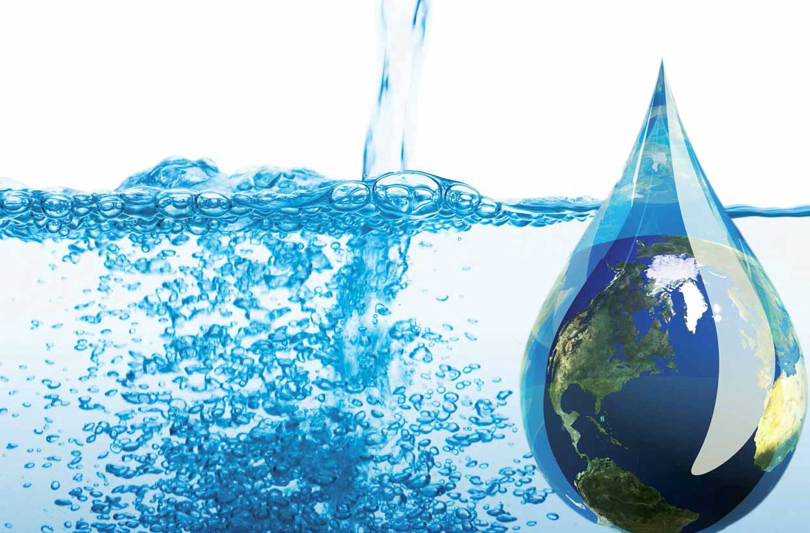
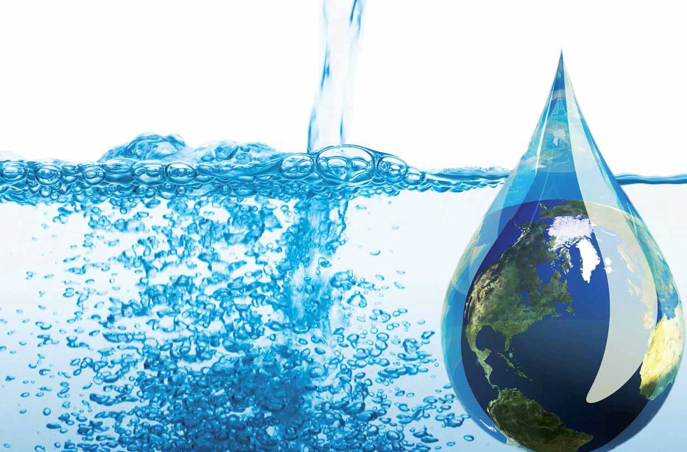
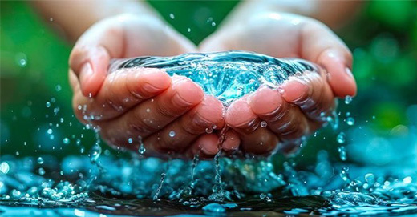
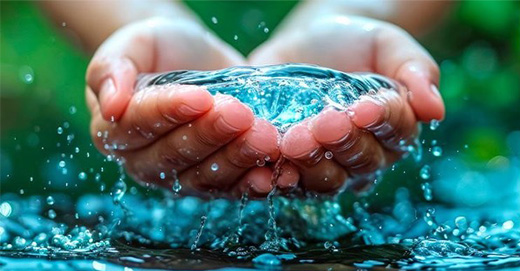
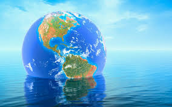
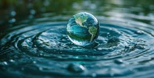
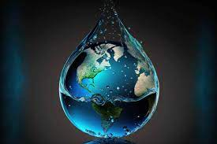
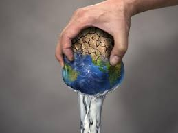
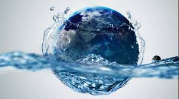
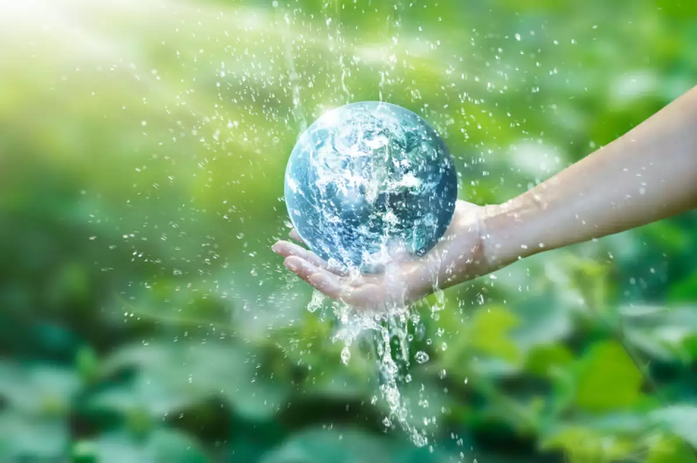

El cuidado del agua es fundamental para asegurar que este recurso vital siga estando disponible para todos, tanto para las generaciones actuales como para las futuras. Aquí te dejo información clave sobre cómo cuidar el agua y por qué es tan importante:
¿Por qué es importante cuidar el agua?
1. Recurso limitado: Aunque el agua cubre más del 70% de la superficie terrestre, solo el 2.5% es agua dulce,
y de esa pequeña cantidad, la mayor parte está congelada en los polos o es inaccesible. Solo una fracción es
accesible para el consumo humano.
2. Escasez de agua: En muchas partes del mundo, el agua potable es escasa. Los cambios climáticos,
la contaminación y el crecimiento de la población ponen en peligro el acceso a agua limpia.
3. Impacto ambiental: El derroche de agua contribuye a la degradación de los ecosistemas acuáticos,
afectando a la flora y fauna, además de agotar fuentes naturales como ríos, lagos y acuíferos.
4. Desarrollo sostenible: El agua es clave para la agricultura, la industria y la salud pública.
Si no se gestionan bien los recursos hídricos, las economías y las sociedades pueden enfrentar graves dificultades.
 

¿Cómo podemos cuidar el agua?
1. Uso eficiente en el hogar:
Cerrar el grifos cuando no lo estés utilizando, como al lavarte los dientes o al fregar los platos.
Instalar dispositivos de ahorro de agua, como regaderas de bajo flujo, inodoros eficientes y
sistemas de riego por goteo.
Arreglar fugas. Las pequeñas fugas en grifos,
cisternas o tuberías pueden desperdiciar grandes cantidades de agua a lo largo del tiempo.
2. Recoger agua de lluvia:
Recoger agua de lluvia es una forma efectiva de usar un recurso natural que de otro
modo se perdería. Puedes instalar un sistema de recolección de agua de lluvia para usarla en riego,
limpieza o incluso para ciertos usos domésticos (después de filtrarla adecuadamente).
3. Consumo responsable:
Comprar productos sostenibles que no dañen las fuentes de agua
(como evitar el uso de productos químicos que contaminen ríos y lagos).
Evitar el uso de plásticos. Los plásticos terminan contaminando los cuerpos de agua,
dañando la vida acuática y afectando la calidad del agua.
4. Educación y concientización:
Difundir la importancia del cuidado del agua. Habla sobre este tema con amigos,
familiares y en tu comunidad para sensibilizar sobre el problema del agua.
Participar en actividades comunitarias como limpieza de ríos, lagos o playas
para prevenir la contaminación de estos cuerpos de agua.
 

Ideas para ahorrar agua en diferentes áreas
1. En la cocina:
Usa el lavavajillas solo cuando esté lleno.
Lava frutas y verduras en un recipiente con agua en lugar de bajo el grifo.
Descongela alimentos en el refrigerador en lugar de hacerlo bajo agua corriente.
2. En el jardín:
Riega las plantas por la mañana temprano o por la noche para evitar la evaporación
del agua por el calor del sol.
Usa mulch (corteza o hojas secas) alrededor de las plantas para retener
la humedad del suelo y reducir la cantidad de riego necesario.
Planta especies resistentes a la sequía, que requieren menos agua para mantenerse saludables.
3. En la lavandería:
Lava cargas grandes de ropa en lugar de hacer varias cargas pequeñas.
Usa el modo de agua fría para lavar la ropa, ya que calentar el agua usa mucha energía y recursos.
4. En la industria y la agricultura:
Optimizar los sistemas de riego para evitar el desperdicio de agua
(como el riego por goteo o la irrigación controlada).
Implementar tecnologías de reciclaje de agua en procesos industriales.
 
Consecuencias de no cuidar el agua
1. Escasez de agua potable: La falta de agua limpia afecta directamente a la
salud humana y puede causar enfermedades transmitidas por el agua, como el cólera.
2. Destrucción de ecosistemas: Cuando el agua de ríos, lagos y mares se agota o se contamina,
los ecosistemas acuáticos y las especies que dependen de ellos pueden desaparecer.
3. Conflictos sociales: La escasez de agua puede provocar tensiones y
conflictos entre diferentes comunidades o países por el acceso a fuentes de agua limitadas.
4. Crisis alimentaria: La agricultura necesita grandes cantidades de agua.
La falta de este recurso puede reducir los cultivos y afectar la producción de alimentos,
provocando hambre y malnutrición.
 
Conclusión
El cuidado del agua es responsabilidad de todos. Desde simples cambios en nuestros hábitos diarios hasta el apoyo a políticas públicas y tecnologías que promuevan un uso más eficiente y responsable del agua, cada acción cuenta. Proteger este recurso vital es crucial para mantener la salud de nuestro planeta y garantizar un futuro sostenible para las próximas generaciones.
 